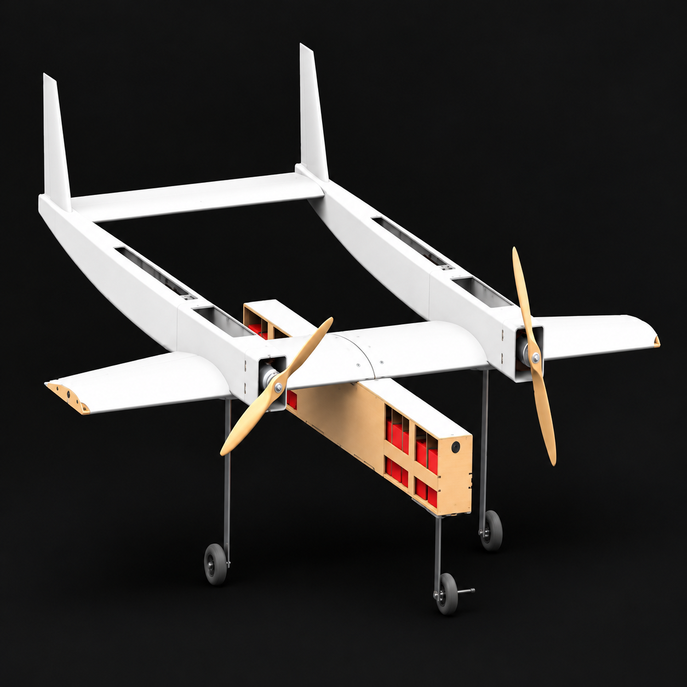

Aerodynamic Design Analysis and Fabrication of a UAV Test Model Capable of Delivering Medical Supplies
Department of Aeronautical Engineering, Military Institute of Science and Technology

Research Summary
This study presents the design, aerodynamic analysis, performance evaluation, and fabrication of an unconventional twin-boom-mounted fixed-wing UAV to address the need for rapid delivery of life-saving drugs and medical instruments. The aircraft configuration was developed using a systematic three-tier design methodology, followed by comprehensive aerodynamic analysis, performance estimation, and computational fluid dynamics (CFD) simulations. Subsequently, a test model of the UAV was fabricated and evaluated to demonstrate its feasibility as a low-cost, efficient, and reliable UAV platform for medical-aid delivery. Results showed that this twin boom-mounted configuration outperformed the conventional fixed- wing cargo carrier in both flight speed and stability.
Keywords:
- Cargo UAV
- Aerodynamic Analysis
- Computational Fluid Dynamics
- Payload Deployment
- Sustainable Aviation